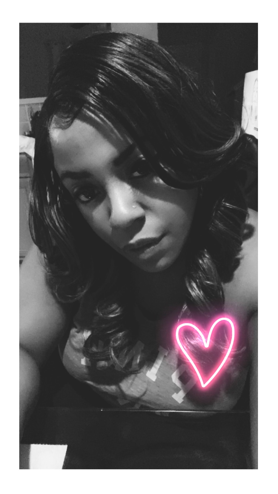

Highlights
I have been in Information Technology for the last 15 years. I started my earlier days of Technology as an adolencent, as my interest grew with age.
I was able to enter the working world as an Help Desk Specialist after graudating high school in 2008. I was able to attend Centriq Training in 2013 funded from the FEC workforce skillis program.
Once I completed my 3 month program, I was able to obtain 3 certificates; A+, Security+, and Network+.
I entered the workforce by starting as Desktop Support Specialist for an few years. Then I was able to migrate into Network and Systems Administration, then into Windows Server Engineering. My most recent job was working as an Citrix/Windows Engineer.
I have been able to build my skills and progress forward in my learning through technology books, forums, and videos. I have entered into an new program through FEC which is for Web Developement. The emphasis is to learn HTML, CSS, JavaScript and WordPress to allow building, designing and publishing websites for mid-large enterprise scale companies.
As a Newtork/Systems Engineer, I specialize in Windows Server, Citrix, and virtualization platforms such as; VMware, Hyper-V, Azure and AWS. I have worked various fields in this area, hence I have an vast amount of knowledge in different areas in IT.
I decided to switch over to the coding side of Information Technology because I enjoy problem solving. I have worked with creating and reading code in past experience both personally and employment, I decided to make a change to add more to my skills by learning HTML, CSS, and JavaScript more in depth.
Over the next year:
I plan to increase and utilize my HTML, CSS, XML, AJAX, SOAP, REST, and JavaScript skills in the working enviornment. Also, continue my learning of C++, Python, Ruby, and PHP.
I am starting my own computer and cell phone repair company, named Electronic Cell Pros. At this time I'm working to create the LLC and company logo in order to promote my repair company. I am using this time to create the company website that will be used to allow commerce.